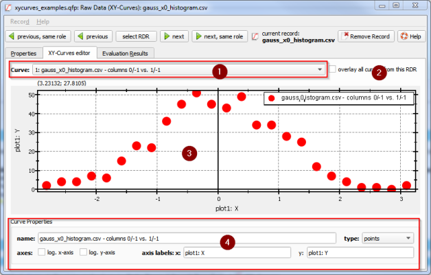

$$qf_commondoc_header.start$$ $$qf_commondoc_header.end$$
Description
This plugin represents one (or more) curves, i.e. datasets $((x_i,y_i)_{i=0..N-1})$. In addition, an error $(\sigma_{x,i})$ / $(\sigma_{y,i})$ may be assigned to each datapoint. The data may be read from different sources:
User Interface
Inserting new records
Adding a curve-RDR is done, as described above, in the mainwindow's menu Data Items | Insert Raw Data |  XY-Curves.
XY-Curves.
Displaying the curves
If you double-click any curve record (with this icon: ) in the project tree, an RDR editor window will open, in which you can view the different curves on the second tab "XY-Curves editor":

Here you can:
- (1): select the curve to display at the top (combobox "Curve:"), or
(2) choose to show an overlay plot of all curves in this record.
- (3): view the curves in the central plotter widget.
- (4): edit the curve metadata at the bottom. The available metadata are:
- name of the curve
- x/y-axis labels
- whether the x/y-axis are log-scaled
- plot type: